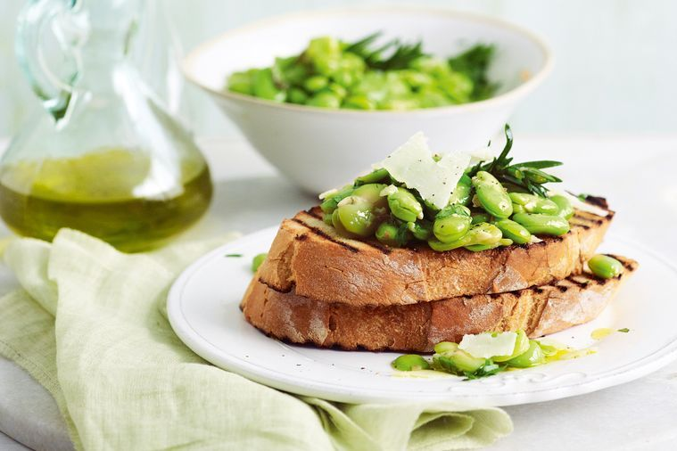

Bruschetta

Description
An electric green, deeply flavourful olive oil is the inspiration for David Prior's quick bruschetta.
Where a classic combination of pecorino and fava or broad bean is made a touch richer with fragrant rosemary.
Ingredients
- 2kg fresh broad beans, podded
- 80ml olive oil, plus extra to brush
- 3 rosemary sprigs
- 3 garlic cloves, roughly chopped, plus 1 extra garlic clove, halved
- 1 loaf ciabatta, cut into 8 thick slices
- 2 tablespoons roughly chopped flat-leaf parsley
- 100g Pecorino Sardo or Pecorino Romano, shaved
Recipe
- Blanch broad beans in boiling salted water for 1 minute, then plunge into iced water and squeeze beans from skins. Set aside.
- Warm oil, rosemary and chopped garlic in a pan over very low heat for 15-20 minutes, stirring occasionally, to infuse oil. Don't allow garlic to colour.
- Add beans, 1 tablespoon water and 1/2 teaspoon each salt and pepper. Increase heat to medium and cook for 2 minutes or until beans are cooked and bright green.
- Meanwhile, preheat a chargrill pan or grill to high. Brush ciabatta with oil, then grill for 1-2 minutes each side until golden and charred. Rub halved garlic over toasts.
- Top toasts with beans and a drizzle of oil. Sprinkle with parsley, cheese and black pepper, then serve immediately.